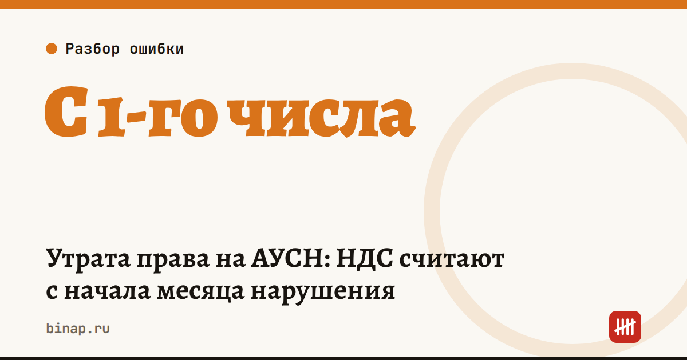

Утрата права на АУСН: НДС считают с начала месяца нарушения

Право на АУСН теряется не со дня нарушения и не со следующего месяца, а с 1-го числа месяца, в котором вы нарушили условия (ч. 2 ст. 3 закона № 17-ФЗ). С этой же даты вы на общем режиме — и с этой же даты появляется НДС со всех продаж месяца. Если следить за лимитами раз в месяц, этого можно избежать.
Коротко
- Дата утраты права — 1-е число месяца, в котором нарушено условие АУСН.
- С этой даты применяется общий режим и считается НДС, если вы не перешли на УСН или ЕСХН.
- Уведомить налоговую об утрате права нужно не позднее 15-го числа следующего месяца.
- Самые частые причины: доход больше 60 млн ₽, больше 5 человек с учётом ГПХ, деньги на счёт в банке не из перечня ФНС, выплаты физлицам наличными.
- Вернуться на АУСН можно не раньше следующего года; после превышения 60 млн ₽, по данным Контур.Эльбы, — нет, потому что лимит проверяют и по доходу прошлого года.
Сроки, изменения и разборы для ИП и самозанятых — каждое утро в Telegram и MAX. Подпишитесь, чтобы не пропустить.
Пример
Выручка перевалила за 60 млн ₽ 15 августа. Вы на ОСНО с 1 августа, НДС считаете со всех продаж с 1 августа, а не с 1 сентября. По данным «Клерка», на это обратило внимание УФНС по Забайкальскому краю.
Сколько стоит ошибка (расчёт редакции, цифры условные). В августе продажи — 6 000 000 ₽, цены установлены без НДС, а покупатели уже заплатили. Если НДС по общей ставке 22% придётся выделить из полученной суммы:
| Показатель | Сумма |
|---|---|
| Продажи за август | 6 000 000 ₽ |
| НДС «внутри» цены: 6 000 000 × 22 ÷ 122 | 1 081 967 ₽ |
| Остаётся выручки без НДС | 4 918 033 ₽ |
Почти 18% выручки месяца уходит в НДС. Поэтому следить за лимитом нужно заранее, а не по итогам месяца.
Из-за чего чаще всего слетают с АУСН
По разбору Контур.Эльбы:
| Условие | Что нарушает |
|---|---|
| Доход с начала года | больше 60 млн ₽ |
| Численность | больше 5 человек, включая исполнителей по ГПХ |
| Банк | деньги пришли на счёт в банке, которого нет в перечне ФНС, — даже на старый забытый счёт |
| Выплаты физлицам | зарплата или вознаграждение наличными |
| Работники | в штате нерезидент |
| Структура | появилось обособленное подразделение |
| Основные средства | остаточная стоимость больше 150 млн ₽ |
Сроки после нарушения
- Сообщите об утрате права через личный кабинет не позднее 15-го числа следующего месяца.
- Если хотите на УСН или ЕСХН, а не на ОСНО, подайте уведомление о переходе — его можно применять с даты утраты права на АУСН.
- Опоздали с декларацией по НДС или оплатой — будут доначисление, пени и штраф.
Что сделать сейчас
- Раз в месяц проверяйте доход нарастающим итогом и численность с учётом ГПХ.
- Закройте счета в банках, которых нет в перечне ФНС, или не давайте их реквизиты клиентам.
- Если нарушение уже случилось — считайте НДС с 1-го числа месяца нарушения и подайте уведомление до 15-го числа следующего месяца.
- Заложите в бюджет 2027 года новый взнос на травматизм: 3 160 ₽ вместо 2 959 ₽.
Сравнить АУСН с обычной упрощёнкой — УСН «доходы» или «доходы минус расходы». Что делать, если налоговая уже прислала требование, — как обжаловать решение проверки.
Частые вопросы
С какой даты платить НДС? С 1-го числа месяца, в котором произошло нарушение.
Можно ли вернуться на АУСН? Со следующего года. По данным Контур.Эльбы, после превышения 60 млн ₽ — нет, потому что лимит проверяют и по доходу прошлого года.
Можно ли сразу перейти на УСН, а не на общий режим? Да, если подать уведомление о переходе: УСН можно применять с даты утраты права на АУСН.